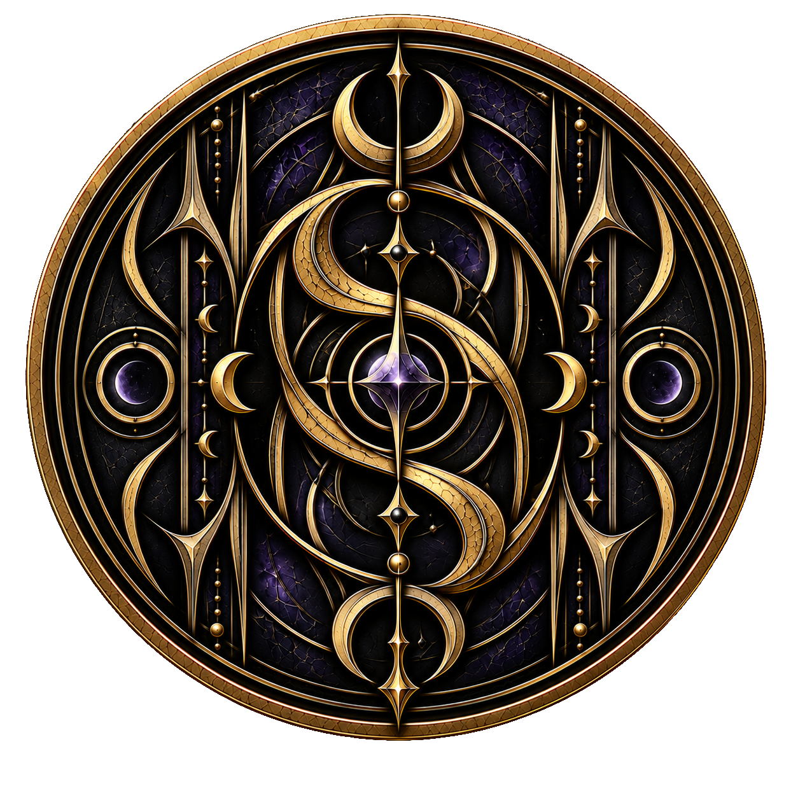

← Zum Artikel „Vampire“Weltwiki · Vampire
Der Solaris-Clan
Der Solaris-Clan gehört zu den jüngsten Vampirclans und befindet sich gesellschaftlich und ideologisch nahezu am entgegengesetzten Ende des Spektrums zum Vyrus-Clan. Während dieser an jahrhundertealten Traditionen festhält, versteht sich der Solaris-Clan als modern und fortschrittsorientiert. Technologie, synthetisches Blut und ein enges Zusammenleben mit Menschen bilden zentrale Bestandteile seiner Lebensweise.
Gemessen an seiner Mitgliederzahl gehört der Solaris-Clan zu den kleineren Vampirclans. Dennoch besitzt er erheblichen wirtschaftlichen und gesellschaftlichen Einfluss, da viele seiner Mitglieder hohe Positionen in großen Unternehmen bekleiden und persönlichen sowie beruflichen Erfolg als wichtige Ideale betrachten.
Entstehung
Der Solaris-Clan entstand erst vor wenigen Jahren durch eine Abspaltung vom Vyrus-Clan. Auslöser war die Entwicklung des synthetischen Blutes, die innerhalb des traditionsbewussten Clans zu massiven Meinungsverschiedenheiten führte.
Die Blutlinien Nyte und Veyra gehörten zu den ersten Familien, die sich offen für die neue Entwicklung aussprachen und schließlich ankündigten, den Vyrus-Clan verlassen und einen eigenen Clan gründen zu wollen. Zahlreiche weitere Vampire schlossen sich ihnen an. Die Bewegung erreichte schließlich eine Größe, bei der selbst der Vyrus-Clan nicht mehr in der Lage war, sämtliche Abtrünnigen entsprechend seiner üblichen Regeln zu bestrafen. Er war daher gezwungen, die Abspaltung hinzunehmen.
Wer das synthetische Blut ursprünglich entwickelte, ist nicht eindeutig bekannt. Gerüchten zufolge sollen die späteren Gründerfamilien des Solaris-Clans jedoch zumindest an seiner Entwicklung beteiligt gewesen sein.
Führung und Gesellschaft
An der Spitze des Solaris-Clans stehen die beiden gleichgestellten Anführerfamilien Nyte und Veyra. Im Gegensatz zur abgeschotteten und geheimnisvollen Führung des Vyrus-Clans organisieren sie den Solaris-Clan in vielerlei Hinsicht beinahe wie ein modernes Unternehmen und übernehmen aktiv Verantwortung für die Versorgung ihrer Mitglieder.
Die derzeitigen Oberhäupter beider Familien sind selbst hoch angesehene Geschäftsführer großer Technologieunternehmen und verfügen dadurch über erhebliche finanzielle Mittel. Diese werden unter anderem dafür eingesetzt, sämtliche Clanmitglieder zuverlässig mit der notwendigen Menge synthetischen Blutes zu versorgen und weitere technische Entwicklungen zu finanzieren.
Geld, gesellschaftlicher Status und beruflicher Erfolg besitzen innerhalb des Clans einen hohen Stellenwert. Viele Mitglieder sind ausgesprochen ambitioniert, bekleiden einflussreiche Positionen in Unternehmen oder beschäftigen sich selbst mit Forschung, Programmierung und technischer Entwicklung. Trotz seiner geringen Mitgliederzahl verfügt der Solaris-Clan dadurch über einen beträchtlichen Einfluss innerhalb der menschlichen Gesellschaft.
Synthetisches Blut und das innere Biest
Der Konsum echten Blutes wird innerhalb des Solaris-Clans entschieden abgelehnt. Dabei handelt es sich nicht lediglich um eine praktische Entscheidung, sondern um einen zentralen Bestandteil seiner Ideologie. Menschen werden nicht als grundsätzlich unterlegene Wesen oder mögliche Blutquelle betrachtet, sondern als gleichwertige Partner, mit denen Vampire gemeinsam leben und arbeiten können.
Auch das innere Biest gilt innerhalb des Clans weitgehend als überholtes Relikt einer früheren vampirischen Lebensweise. Durch den ausschließlichen Konsum synthetischen Blutes wird es nicht mehr genährt und verbleibt in einem ruhenden Zustand. Seine bewusste Nutzung und die damit verbundenen Risiken spielen im alltäglichen Leben der Solaris-Vampire daher kaum noch eine Rolle.
Technologie
Technologischer Fortschritt nimmt im Solaris-Clan eine zentrale Stellung ein. Smartphones, Computer, moderne Fahrzeuge und vernetzte Häuser gehören selbstverständlich zum Alltag. Viele Mitglieder besitzen darüber hinaus ein ausgeprägtes persönliches Interesse an Technologie und beschäftigen sich mit der Entwicklung und Programmierung moderner technischer Lösungen.
Magische Artefakte wurden dagegen nahezu vollständig hinter sich gelassen. Funktionen, für die andere Vampire Artefakte verwenden, versucht der Solaris-Clan nach Möglichkeit durch moderne Technik zu ersetzen.
Zu den bedeutendsten Entwicklungen des Clans gehören spezielle Sonnenschutzmittel und Kontaktlinsen, die Vampire vor den Auswirkungen direkten Sonnenlichts schützen. Durch diese Hilfsmittel können sich Solaris-Vampire auch tagsüber nahezu uneingeschränkt unter Menschen bewegen, ohne ihre wahre Natur offenbaren zu müssen. Die Technologie wird teilweise sogar an Angehörige anderer Vampirclans verkauft.
Zusammenleben mit Menschen
Der Umgang mit Menschen ist für Angehörige des Solaris-Clans vollkommen alltäglich. Sie leben und arbeiten gemeinsam mit ihnen, schließen Freundschaften und können romantische Beziehungen oder Ehen mit Menschen eingehen. Eine spätere Verwandlung des menschlichen Partners wird dabei weder verlangt noch grundsätzlich erwartet.
Die Mitglieder des Clans betrachten Menschen als gleichwertigen Teil ihrer Lebenswelt und sehen in der Zusammenarbeit mit ihnen eine Möglichkeit zur gemeinsamen Weiterentwicklung. Menschliches Wissen, wirtschaftlicher Einfluss und gesellschaftliche Strukturen werden nicht als etwas betrachtet, von dem Vampire sich abgrenzen sollten.
Ihre eigene vampirische Natur halten die Mitglieder des Solaris-Clans gegenüber der menschlichen Öffentlichkeit dennoch weiterhin geheim. Durch die vom Clan entwickelten technischen Hilfsmittel ist es ihnen jedoch möglich, weitgehend uneingeschränkt am gewöhnlichen menschlichen Alltag teilzunehmen.
Regeln und Verhältnis zu anderen Clans
Eine der wenigen Traditionen, die der Solaris-Clan aus seiner Zeit innerhalb des Vyrus-Clans übernommen hat, ist das grundsätzliche Verbot privater Kontakte zu Angehörigen anderer Vampirclans. Verstöße werden jedoch wesentlich weniger streng verfolgt und häufig innerhalb der betroffenen Familien geklärt.
Das Verhältnis zum Vyrus-Clan ist aufgrund der Abspaltung und der nahezu gegensätzlichen Weltbilder bis heute stark angespannt. Trotz dieser Spannungen besteht jedoch kein dauerhafter offener Konflikt zwischen beiden Clans.